class: center, middle # Some recent developments in Deep Learning ## How to fight label starvation Olivier Grisel - PyData Berlin 2016 .affiliations[   ] --- class: center, middle # Disclaimer ## None of what follows is my own work --- # Agenda .middlebelowheader[ ### Learning Representations via Context Predictions ### Learning Agent Control with Trajectory Optimization ] --- # Deep Learning is very successful... .middlebelowheader[ when labeled data is both **rich** and **abundant**: - object classification for 1000 classes and 1M images - speech recognition with thousands of hours of time aligned audio transcriptions ] --- # How to handle missing labels? .middlebelowheader[ ### Traditional unsupervised learning #### Clustering, Dimensionality Reduction ### Reconstruction through bottleneck/noise #### Auto-encoders, Ladder Networks ### Generative models #### Probabilistic Models P(X), Generative Adversarial Networks ### Self-supervision & Context Prediction ] --- class: center, middle, bgheader # Learning Representations via Context Predictions --- class: center, middle background-image: url(images/word2vec.png) background-size: contain --- class: middle, center 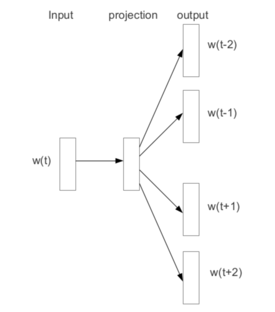 .credits[ Distributed Representations of Words and Phrases and their Compositionality. T. Mikolov, I. Sutskever, K. Chen, G. Corrado, J. Dean. ] --- # Skipgram & Negative Sampling .middlebelowheader[ #### Maximum likelihood estimation <div style="text-align: center; width: 750px"> 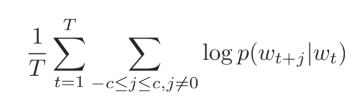 </div> #### Model parametrization <div style="text-align: center; width: 750px"> 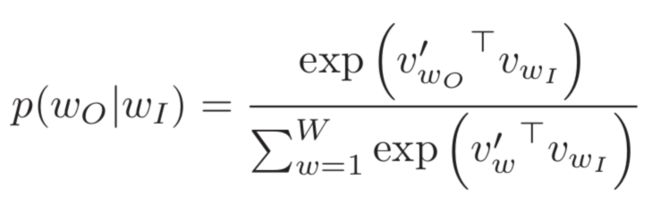 </div> #### Negative Sampling <div style="text-align: center; width: 750px"> 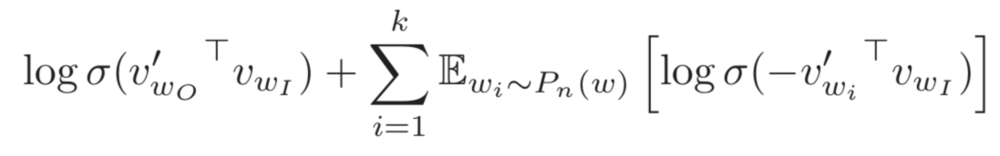 </div> ] .credits[ Distributed Representations of Words and Phrases and their Compositionality. T. Mikolov, I. Sutskever, K. Chen, G. Corrado, J. Dean. ] --- class: center, middle, singleimg 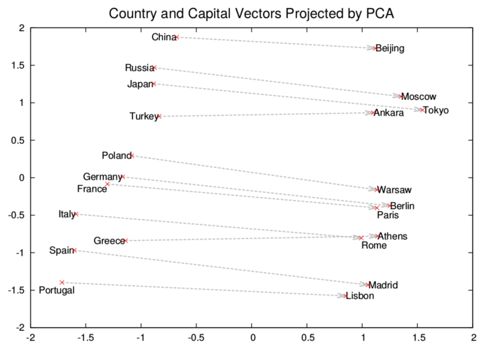 .credits[ Distributed Representations of Words and Phrases and their Compositionality. T. Mikolov, I. Sutskever, K. Chen, G. Corrado, J. Dean. ] --- # Word2vec success .middlebelowheader[ ## Wide adoption among practicioners ### Good for arbitrary tag similaries ### Can help deal with Out-of-Vocabulary issue ## No easy way to handle full sentences ] --- class: center, middle background-image: url(images/skip-thought-vectors.png) background-size: contain --- class: center, middle 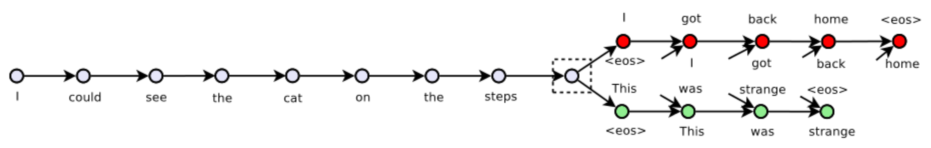 .credits[ Skip-Thought Vectors. R. Kiros, Y. Zhu, R. Salakhutdinov, R. S. Zemel, A. Torralba, R. Urtasun, S. Fidler ] --- class: center, middle 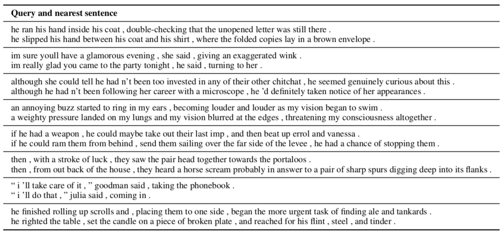 .credits[ Skip-Thought Vectors. R. Kiros, Y. Zhu, R. Salakhutdinov, R. S. Zemel, A. Torralba, R. Urtasun, S. Fidler ] --- class: center, middle .credits[ Skip-Thought Vectors. R. Kiros, Y. Zhu, R. Salakhutdinov, R. S. Zemel, A. Torralba, R. Urtasun, S. Fidler ] --- class: center, middle 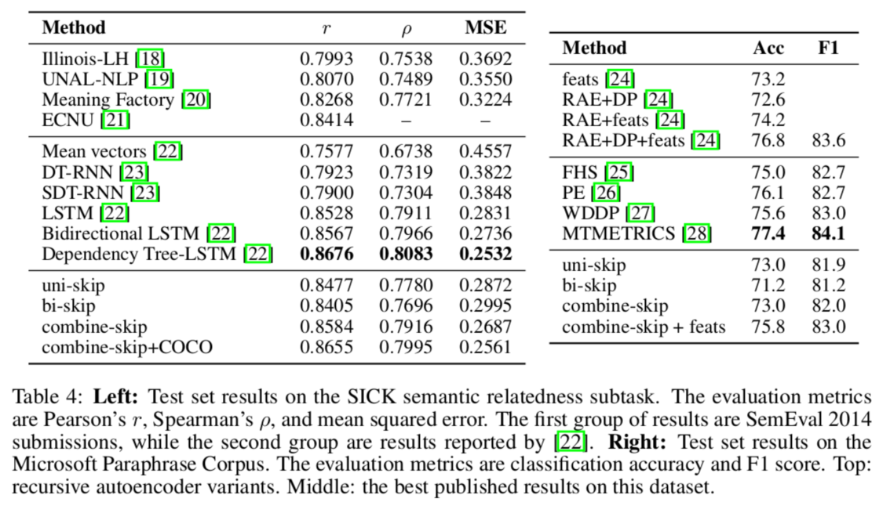 .credits[ Skip-Thought Vectors. R. Kiros, Y. Zhu, R. Salakhutdinov, R. S. Zemel, A. Torralba, R. Urtasun, S. Fidler ] --- class: center, middle background-image: url(images/visual-context-prediction-paper.png) background-size: contain --- class: center, middle 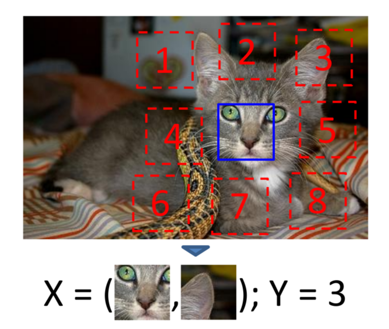 .credits[ Unsupervised Visual Representation Learning by Context Prediction. C. Doersch, A. Gupta, A. Efros. ] --- class: center, middle 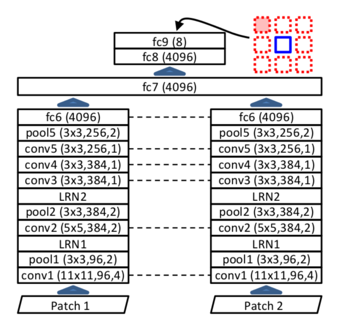 .credits[ Unsupervised Visual Representation Learning by Context Prediction. C. Doersch, A. Gupta, A. Efros. ] --- class: center, middle 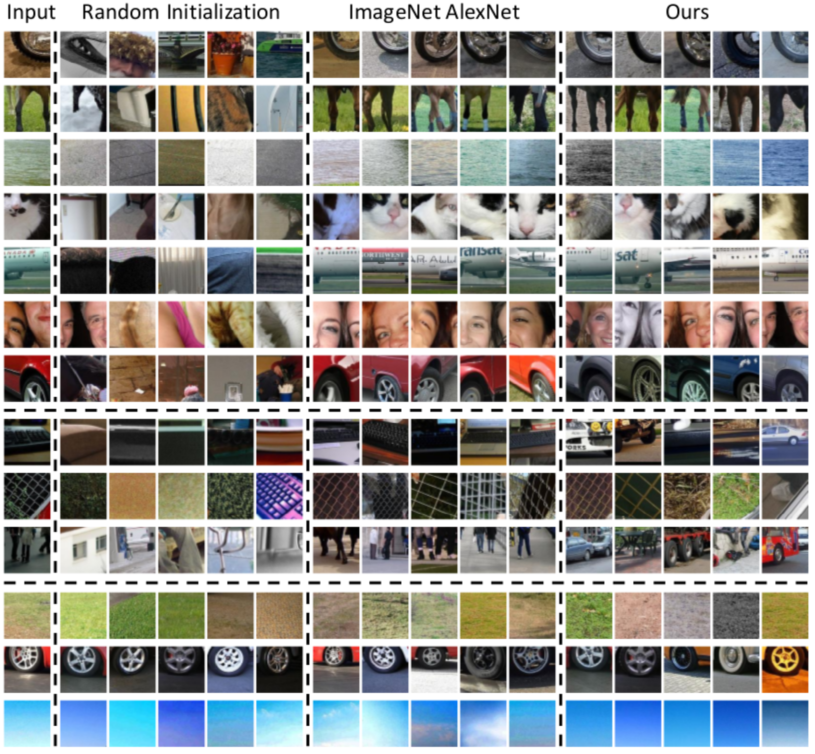 .credits[ Unsupervised Visual Representation Learning by Context Prediction. C. Doersch, A. Gupta, A. Efros. ] --- class: center, middle background-image: url(images/jigsaw.png) background-size: contain --- class: center, middle 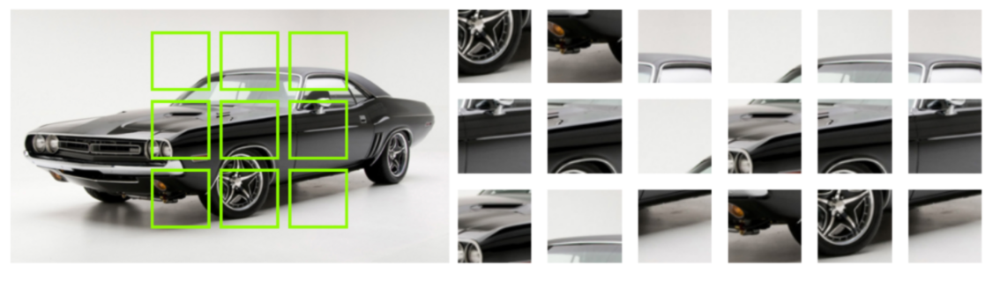 .credits[ Unsupervised Learning of Visual Representations by Solving Jigsaw Puzzles M. Noroozi and P. Favaro. ] --- class: center, middle 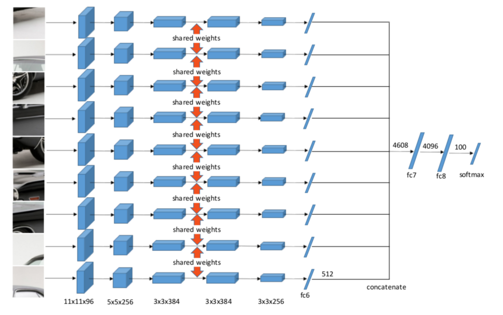 .credits[ Unsupervised Learning of Visual Representations by Solving Jigsaw Puzzles M. Noroozi and P. Favaro. ] --- class: center, middle 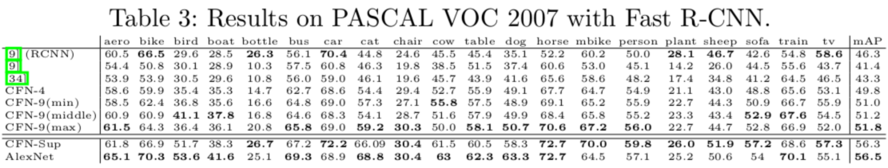 .credits[ Unsupervised Learning of Visual Representations by Solving Jigsaw Puzzles M. Noroozi and P. Favaro. ] --- class: center, middle, bgheader # Learning Agent Control with Trajectory Optimization --- # Agent Control .middlebelowheader[ ## Optimal Control / Planning ### Requires accurate model and comprehensive state features ### Trajectory optimization too compute intensive for real-time ] --- # Deep Reinforcement Learning .middlebelowheader[ ### Agent policy parametrized by a deep network ### Quite successful for Atari Games and AlphaGo ### Collecting a lot of training via (self-)play ### Bootstrapped by supervised learning (AlphaGo) ] --- # Reinforcement Learning from sensory input .middlebelowheader[ ### Reward too rare and delayed for high dim observations & actions ### Learning to walk will never see positive reward from random policy init ### How to collect experience or even supervised labels? ] --- class: center, middle background-image: url(images/supersizing-self-supervision.png) background-size: contain --- class: center, middle 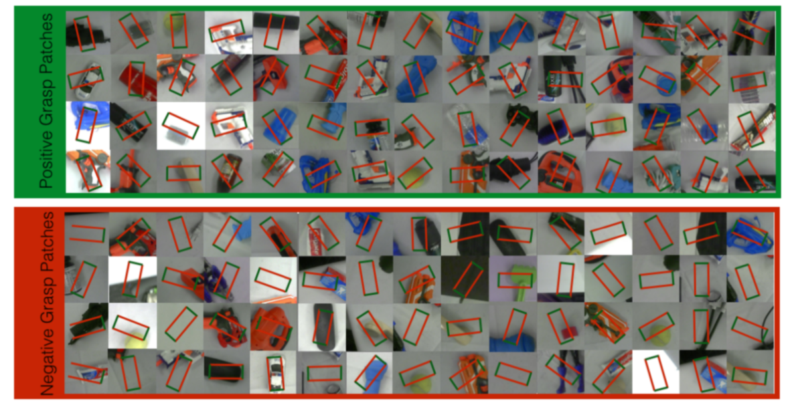 .credits[ Supersizing Self-supervision: Learning to Grasp from 50K Tries and 700 Robot Hours. L. Pinto, A. Gupta. ] --- class: center, middle 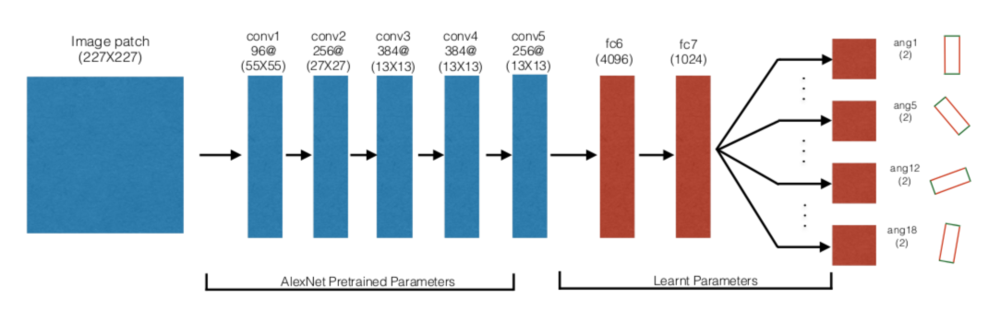 .credits[ Supersizing Self-supervision: Learning to Grasp from 50K Tries and 700 Robot Hours. L. Pinto, A. Gupta. ] --- class: center, middle 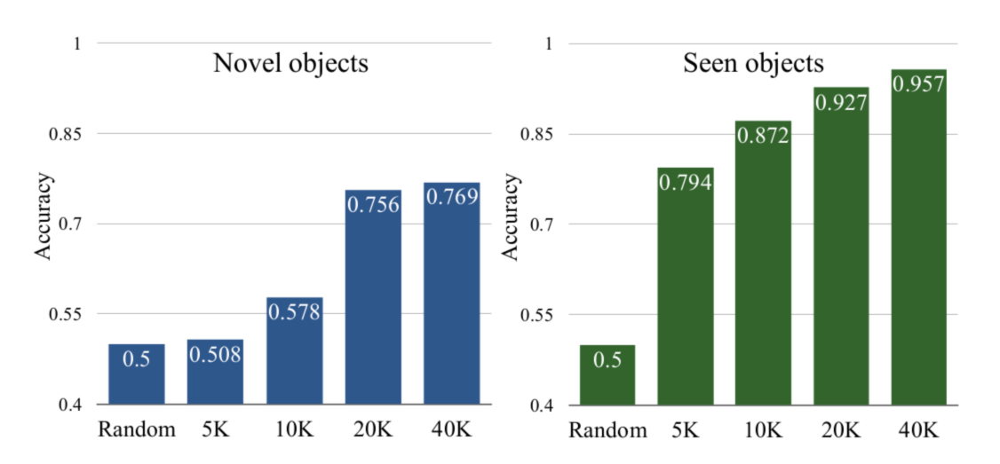 .credits[ Supersizing Self-supervision: Learning to Grasp from 50K Tries and 700 Robot Hours. L. Pinto, A. Gupta. ] --- class: center, middle 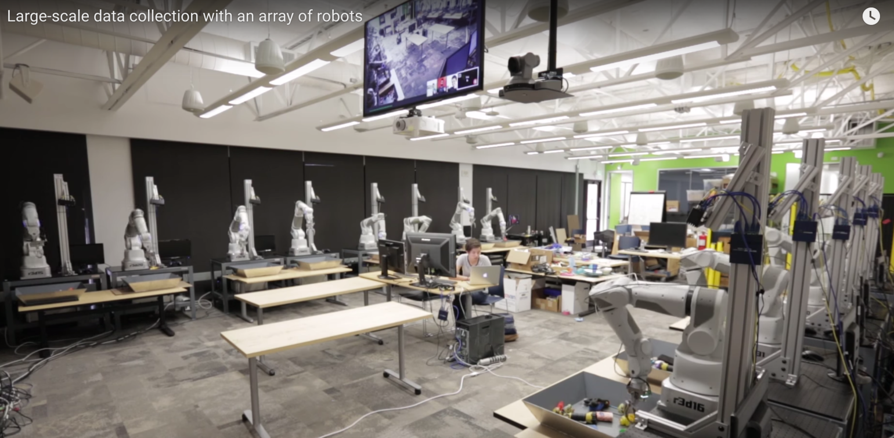 .credits[ Deep Learning for Robots: Learning from Large-Scale Interaction http://googleresearch.blogspot.co.uk/2016/03/deep-learning-for-robots-learning-from.html ] --- # Back to optimal control .middlebelowheader[ <div style="width: 750px; text-align: center; font-size: 80%"> <iframe frameborder="0" scrolling="no" marginheight="0" marginwidth="0" width="600" height="332" type="text/html" src="https://www.youtube.com/embed/mhr_jtQrhVA?autoplay=0"></iframe> </div> ] .credits[ Discovery of Complex Behaviors through Contact-Invariant Optimization I. Mordatch, E. Todorov, Z. Popović ] --- # Teaching Control to a Network .middlebelowheader[ <div style="width: 750px; text-align: center; font-size: 80%"> <iframe frameborder="0" scrolling="no" marginheight="0" marginwidth="0" width="600" height="332" type="text/html" src="https://www.youtube.com/embed/IxrnT0JOs4o?autoplay=0"></iframe> </div> ] .credits[ Interactive Control of Diverse Complex Characters with Neural Networks I. Mordatch, K. Lowrey, G. Andrew, Z. Popović, E. Todorov ] --- # Guided Policy Search 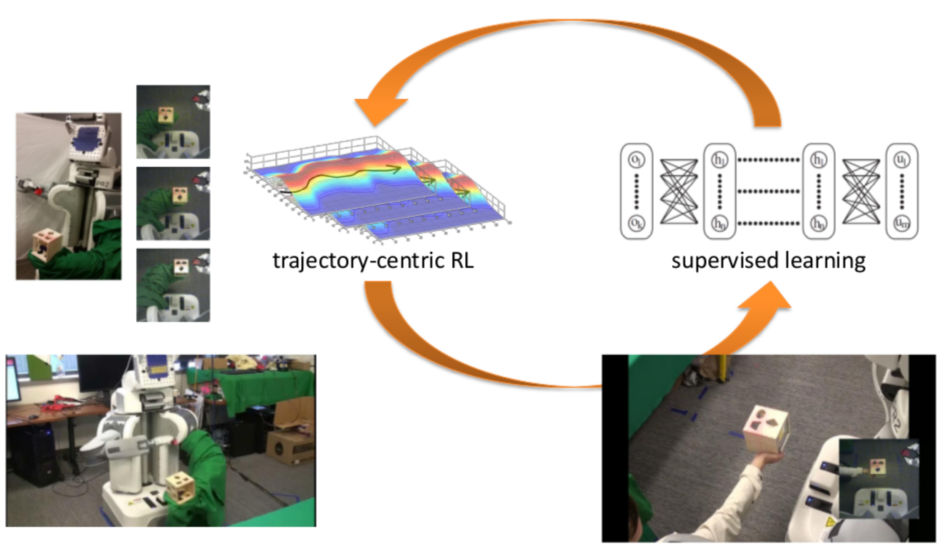 .credits[ Deep Robotic Learning, ICLR 2016. S. Levine et al. ] --- # Conclusion .middlebelowheader[ ### Deep Architecture are best trained with extensive supervision ### Many unsupervised settings can be reframed as auxiliary supervised task ### Use end-to-end fine-tuning or multi-task learning for final blend ] --- class: middle # Thank you for your attention! ## Some talks - [Interactive Control of Diverse Complex Characters with Neural Networks @ NIPS 2015](http://research.microsoft.com/apps/video/default.aspx?id=259609&l=i) - [Deep Robotic Learning @ ICLR 2016 ](http://videolectures.net/iclr2016_levine_deep_learning/) ## Those slides - http://ogrisel.github.io/decks/2016_strata_london_dl_overview --- # References (1/2) - Distributed Representations of Words and Phrases and their Compositionality. T. Mikolov, I. Sutskever, K. Chen, G. Corrado, J. Dean. - Skip-Thought Vectors. R. Kiros, Y. Zhu, R. Salakhutdinov, R. S. Zemel, A. Torralba, R. Urtasun, S. Fidler - Unsupervised Visual Representation Learning by Context Prediction. C. Doersch, A. Gupta, A. Efros. - Unsupervised Learning of Visual Representations by Solving Jigsaw Puzzles. M. Noroozi and P. Favaro. --- # References (2/2) - Supersizing Self-supervision: Learning to Grasp from 50K Tries and 700 Robot Hours. L. Pinto, A. Gupta. - Discovery of Complex Behaviors through Contact-Invariant Optimization. I. Mordatch, E. Todorov, Z. Popović - Interactive Control of Diverse Complex Characters with Neural Networks. I. Mordatch, K. Lowrey, G. Andrew, Z. Popović, E. Todorov